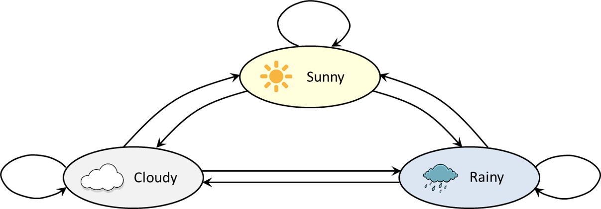
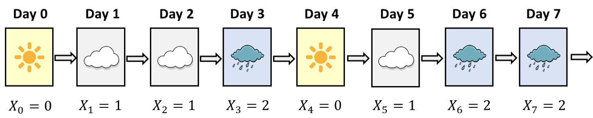
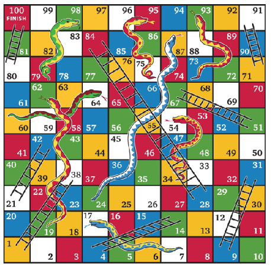
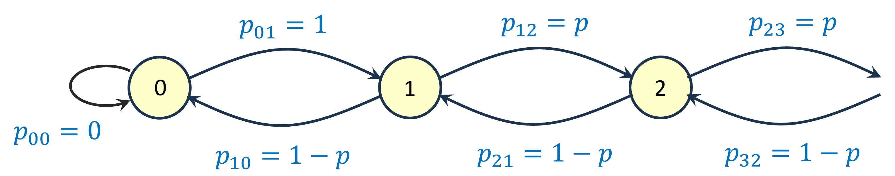
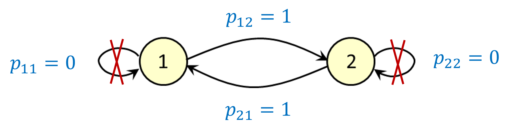
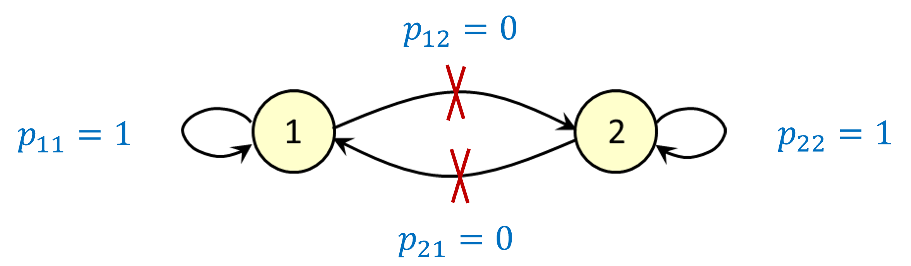
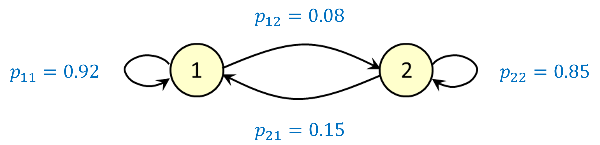
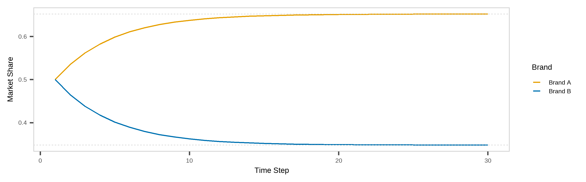
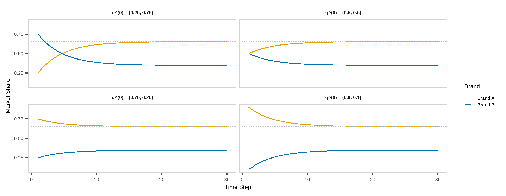

00:30


Introduction to Markov Processes in Healthcare Supply Chains
Harsha Halgamuwe Hewage
Data Lab for Social Good Research Lab, Cardiff University, UK
2025-05-15
Assumptions
You should be familiar with basic probability and random variables.
You are expected to be comfortable with R (or Python) for basic simulation and matrix operations.
This is not a theory-heavy workshop—we will use simple examples to build intuition, not derive theorems.
What we will cover
Key concepts in Markov chains
Transition matrices and system evolution
Steady-state distributions and their interpretations
Applications of Markov models in healthcare supply chains
Code demonstrations and simulations
What we will not cover
Proofs of Markov chain convergence theorems
Advanced topics like Hidden Markov Models or Semi-Markov processes
Continuous-time Markov processes in full generality
Formal classification of all chain types (e.g., reducibility, ergodicity)
Marcov process with rewards
Materials

You can find the workshop materials here.
Note: These materials are based on my learnings at NATCOR Taught Course Centre: Stochastic Modelling Course.
Outline
Why stochastic modeling?
What are Markov processes?
Brand switching as a DTMC example
Code walk-throughs in R
Why stochastic modeling?
Why stochastic modelling in healthcare supply chains?
Demand is unpredictable: Patient arrivals, seasonal outbreaks, and changing usage patternsSupply is uncertain: Delivery delays, stock losses, funding gaps, partial shipmentsHelps quantify risks: Probability of stockouts, unmet demand, cold chain failuresEnables simulation of long-run behavior: Understand steady-state stock levels, refill patterns, or equipment uptimeUseful for evaluating interventions: E.g., What if we promote a local brand? Add a backup supplier? Use mobile delivery?
What are Markov processes?
System states
We want to model the behaviour of a system which can change its state from one period to the next.
For example:
| System | States | Time unit |
|---|---|---|
| Weather | Sunny, cloudy, rainy, … | Day or hour |
| No. of people in a healtcare centre | 0, 1, 2, 3, … | Minute or second |
| Status of job application | “In preparation”, “Submitted”, “Invited for interview”, … | Day or hour? |
System states: weather example
We are interested in the transitions between different states. Suppose there are only 3 possible states in weather:

From any of the 3 states we can get to any of the other states in a single transition (or stay in the same state). A sample trajectory of the system could be:
\([Sunny, Cloudy, Cloudy, Rainy, Sunny, Cloudy, Rainy, Rainy, …]\)
System states: weather example cont.
For convenience, let’s give each of the 3 states a number: \(0 – Sunny\), \(1 – Cloudy\), \(2 – Rainy\)
Let \(S\) be the set of system states. So in our example: \(S = {0, 1, 2}\)
Let \(X_n\) be the state of the system after \(n\) time units (e.g. days).
For example:

System states: weather example cont.
Suppose that the system begins as follows:
\(X_0 = 0, X_1 = 1, X_2 = 1, X_3 = 2\)
Given the above, what is the probability that \(X_4 = 0\), i.e. it is sunny after 4 days? We can write this as a conditional probability:
\[ Pr(X_4 = 0\,|\,\underbrace{X_0 = 0,\,X_1 = 1,\, X_2 = 1,\,X_3 = 2)}_{\text{entire history of the process}} \] Suppose we assume that the probability that \(X_4 = 0\) depends only on the value of \(X_3\), and not on \(X_2\), \(X_1\) or \(X_0\). We can then write:
\[ Pr(X_4 = 0\,|\,\underbrace{X_0 = 0,\,X_1 = 1,\, X_2 = 1,\,X_3 = 2)}_{\text{entire history of the process}} = Pr(X_4 = 0\,|\,\underbrace{X_3 = 2)}_{\text{current state}} \]
Markov process: definition
A stochastic process with the Markov Property:
\((X_1, X_2, X_3, ...)\)
in which the probability distribution for state \(X_{n+1}\) depends only on the state \(X_n\), and not on any of the states from \(X_0\) up to \(X_{n-1}\) (for all \(n \ge 0\)).
Writing this more mathematically, we can say:
\[
\Pr\bigl(X_{n+1} = j \;\bigm|\; X_0 = x_0,\; X_1 = x_1,\;\dots,\; X_n = x_n\bigr)
\;=\;
\Pr\bigl(X_{n+1} = j \;\bigm|\; X_n = x_n\bigr)
\]
Key idea: “The future depends only on the present, not on the past.”
So the probability distribution for the next state depends only on the current state, not on the history of previous states. Can be discrete or continuous in time.
Pause for a thought… 💬
Is it a good idea to model the weather using a Markov chain?
What is a good example of a Markov chain?

For example, in Snakes and Ladders,
if \(X_n = 50\) then:
- \(\displaystyle \Pr\bigl(X_{n+1}=67 \mid X_n=50\bigr) = \tfrac{1}{6}\)
- \(\displaystyle \Pr\bigl(X_{n+1}=52 \mid X_n=50\bigr) = \tfrac{1}{6}\)
- \(\displaystyle \Pr\bigl(X_{n+1}=53 \mid X_n=50\bigr) = \tfrac{1}{6}\)
- \(\displaystyle \Pr\bigl(X_{n+1}=34 \mid X_n=50\bigr) = \tfrac{1}{6}\)
- \(\displaystyle \Pr\bigl(X_{n+1}=55 \mid X_n=50\bigr) = \tfrac{1}{6}\)
- \(\displaystyle \Pr\bigl(X_{n+1}=56 \mid X_n=50\bigr) = \tfrac{1}{6}\)
Assumptions of Markov chain models
Remember, simple Markov chain models rely upon some important assumptions:
The Markov chain is in exactly one state on any particular time step
The probability distribution for the next state only depends on the current state
(i.e., Markov property)The transition probabilities are the same on every time step
Discrete time Markov Chains
Transition probability matrix
Let \(S = \{s_1, s_2, \dots, s_n\}\) be the finite state space. The one-step transition probabilities are:
\[ p_{ij} = \Pr(X_{t+1} = s_j \mid X_t = s_i) \]
We collect these into the transition matrix:
\[ P = [p_{ij}], \quad \text{where each row sums to 1} \]
The \(n\)-step transition matrix is:
\[ P^{(n)} = P^n = \underbrace{P \cdot P \cdot \dots \cdot P}_{n\text{ times}} \]
We can use the Chapman-Kolmogorov Equation:
\[ P^{(n)} = P^{(k)} P^{(n-k)} \]
Steady-state distribution
When a Markov chain evolves over time, the probability distribution of states may converge to a fixed vector — called the steady-state distribution, \(\pi\).
A steady-state distribution exists if the chain is:
- Irreducible: all states communicate
- Aperiodic: not cyclic
- Positive recurrent: expected return time is finite
Steady-state equation: \(\pi P = \pi, \quad \sum_i \pi_i = 1\)
This means:
- \(\pi_i\): long-run proportion of time spent in state \(i\)
- It’s a left eigenvector of \(P\) corresponding to eigenvalue 1
Classifying states: infinitely many states
Suppose we have a Markov chain defined on the infinite state space \({0, 1, 2, …}\). If it is in state 0 then it moves to state \(1\) with probability \(1\). If it is in any other state then it moves up with probability \(p\) and moves down with probability \(1-p\), where \(0<p<1\).

Key point: if a Markov chain has infinitely many states, a steady-state distribution might not exist.
Classifying states: periodic states
Suppose we have a Markov chain which just goes back and forth between states 1 and 2. We call this a periodic Markov chain with a period of 2, because it can only return to the same state after an even number of time steps.

Key point: even if a steady-state distribution exists, the Markov chain might not “converge” to the steady-state distribution unless it actually starts there.
Classifying states: absorbing states
This time, we assume that if you’re in state 1 you stay there forever – and the same applies to state 2. In this case we call states 1 and 2 absorbing states.

Key point: if states do not all “communicate” with each other (meaning that you cannot necessarily find a path from one state to another), there could be multiple steady-state distributions.
Brand switching
Imagine there are two brands of paracetamol 100mg tablets: Brand A (locally manufactured) and Brand B (imported). As the healthcare center manager, you’re planning to promote Brand A via healthcare campaigns to encourage local sourcing. You want to estimate how the market share evolves over time and determine the expected steady-state market share for each brand under this strategy.
Lets promote Brand A
Assume patients switch weekly between two brands according to the probabilities shown in the table below:
| From To | Brand A | Brand B |
|---|---|---|
| Brand A | 0.92 | 0.08 |
| Brand B | 0.15 | 0.85 |
Let \(X_n\) denote the preferred brand (either A or B) of a randomly-chosen customer after \(n\) weeks. From the table:
\(\Pr(X_{n+1}=1 \mid X_n = 1) = 0.92\)
\(\Pr(X_{n+1}=2 \mid X_n = 1) = 0.08\)
\(\Pr(X_{n+1}=1 \mid X_n = 2) = 0.15\)
\(\Pr(X_{n+1}=2 \mid X_n = 2) = 0.85\)
Lets promote Brand A cont.
10:00
We can represent this situation using a discrete-time Markov chain:

We are using some shorthand notation: \(p_{ij} = Pr(X_{n+1} = j \,|\, X_n = i)\)
Lets promote Brand A cont.
Suppose that after zero weeks, both brands have a 50% market share. This means a randomly-chosen patient has a 50% chance of preferring Brand A.
So: \(Pr(X_0 = 1) = 0.5\) and \(Pr(X_0 = 2) = 0.5\)
Using the switching probabilities and invoking the law of total probability, we can calculate the preferred brand of a randomly-chosen patient after 1 week:
\(Pr(X_1 = 1) = \underbrace{Pr(X_0 = 1)Pr(X_1 = 1|X_0 = 1)}_{\text{(begin in state 1)}} + \underbrace{Pr(X_0 = 2)Pr(X_1 = 1|X_0 = 2)}_{\text{(begin in state 2)}} \\ =(0.5×0.92)+(0.5×0.15)=0.535\)
\(Pr(X_1 = 2) = \underbrace{Pr(X_0 = 1)Pr(X_1 = 2|X_0 = 1)}_{\text{(begin in state 1)}} + \underbrace{Pr(X_0 = 2)Pr(X_1 = 2|X_0 = 2)}_{\text{(begin in state 2)}} \\=(0.5×0.08)+(0.5×0.85)=0.465\)
Lets promote Brand A cont.
We can make these calculations look neater by using matrix-vector notation. Let \(p_{ij}\) denote the probability of switching from \(i\) to \(j\). Obviously, this implies:
\(p_{ij}\ge0,\;\forall\,i,j\in S\), \(\sum_{j\in S} p_{ij} = 1,\;\forall\,i\in S.\)
Let \(P\) denote the transition matrix:
\[ \mathbf{P} \;=\; \begin{pmatrix} p_{11} & p_{12} \\ p_{21} & p_{22} \end{pmatrix} \;=\; \begin{pmatrix} 0.92 & 0.08 \\ 0.15 & 0.85 \end{pmatrix} \]
Also let \(q^{(0)}\) be the vector of initial market shares:
\(q^{(0)}=(0.5, 0.5)\)
To get the expected market shares after one week, we multiply \(q^{(0)}\) by \(P\) to get \(q^{(1)}\)
\[ \mathbf{q}^{(0)} \mathbf{P} \;=\; (0.5,\;0.5)\, \begin{pmatrix} 0.92 & 0.08\\ 0.15 & 0.85 \end{pmatrix} \;=\; (0.535,\;0.465) \;=\; \mathbf{q}^{(1)} \]
Lets promote Brand A cont.
To find the expected market shares after two weeks, we repeat the process, starting from the expected market shares after one week. This means we need to calculate
\[ \overset{\substack{\text{expected market shares}\\\text{after one week}}} {\mathbf{q}^{(1)}} \;\times\; \overset{\text{transition matrix}}{P} \;\;=\;\; \overset{\substack{\text{expected market shares}\\\text{after two weeks}}} {\mathbf{q}^{(2)}} \]
\[ \mathbf{q}^{(1)} \mathbf{P} \;=\; (0.535,\;0.465)\, \begin{pmatrix} 0.92 & 0.08\\ 0.15 & 0.85 \end{pmatrix} \;=\; (0.56195,\;0.43805) \;=\; \mathbf{q}^{(2)} \]
Similarly, to find the expected market shares after three weeks:
\[ \mathbf{q}^{(2)} \mathbf{P} \;=\; (0.56195,\;0.43805)\, \begin{pmatrix} 0.92 & 0.08\\ 0.15 & 0.85 \end{pmatrix} \;=\; (0.5827015,\;0.4172985) \;=\; \mathbf{q}^{(3)} \]
Lets promote Brand A cont.
In general, to find the expected market shares after \(n\) weeks, we calculate
\(\mathbf{q}^{(n-1)}\,\mathbf{P} = \mathbf{q}^{(n)}\)
This is the same as:
\(\mathbf{q}^{(0)}\underbrace{\mathbf{P}\,\mathbf{P}\,\cdots\,\mathbf{P}}_{\text{(n times)}} \;=\; \mathbf{q}^{(0)}\,\mathbf{P}^n\)
i.e. the vector of initial market shares multiplied by \(\mathbf{P}\) to the power \(n\).
Lets promote Brand A cont.
10:00
Recall that: \(\mathbf{q}^{(n)}\) = vector of state probabilities after \(n\) time steps (this is the vector of expected market shares in our task) and \(\mathbf{P}\) = transition matrix.
We have already seen that \(\mathbf{q}^{(n)}\) appears to converge towards a limit as \(n\) increases. If we use \(\boldsymbol{\pi}\) to denote the limiting vector, i.e. \(\boldsymbol{\pi} \;=\;\lim_{n \to \infty}\mathbf{q}^{(n)},\) then we can take limits to obtain:
\[ \boldsymbol{\pi}P = \boldsymbol{\pi} \]
Note: \(\boldsymbol{\pi} = (\pi_1,\pi_2)\), where the numbers \(\pi_1\) and \(\pi_2\) are “unknowns.”
Lets promote Brand A cont.
By solving the equations \(\boldsymbol{\pi} = (\pi_1,\pi_2)\) (where \(\boldsymbol{\pi}\) is a ‘vector of unknowns’) we can calculate the steady-state distribution of the Markov chain.
Recall the market shares example from earlier. Let \(\pi_1\) and \(\pi_2\) denote the (unknown) steady-state expected market shares for brands A and B respectively. We have:
\[ \boldsymbol{\pi}P = \boldsymbol{\pi} \quad\Longleftrightarrow\quad (\pi_1, \pi_2) \begin{pmatrix} 0.92 & 0.08 \\ 0.15 & 0.85 \end{pmatrix} = (\pi_1, \pi_2). \]
This gives us a couple of linear equations in \(\pi_1\) and \(\pi_2\):
\[ \;\Longleftrightarrow\; \begin{cases} \pi_1 = 0.92\,\pi_1 + 0.15\,\pi_2\\[6pt] \pi_2 = 0.08\,\pi_1 + 0.85\,\pi_2 \end{cases} \;\Longleftrightarrow\; \begin{cases} 0.08\,\pi_1 - 0.15\,\pi_2 = 0\\[6pt] 0.08\,\pi_1 - 0.15\,\pi_2 = 0 \end{cases} \quad\text{(These equations are the same!)} \]
To solve these equations we will also have to use the fact that \(\pi_1 + \pi_2 = 1\).
Lets promote Brand A cont.
Let’s replace one of the two identical equations with \(\pi_1 + \pi_2 = 1\). Then we have:
\[ \begin{cases} 0.08\,\pi_1 - 0.15\,\pi_2 = 0\\[6pt] \pi_1 + \pi_2 = 1 \end{cases} \]
If we substitute \(\pi_2 = 1 - \pi_1\) into the first equation, this gives:
\[ 0.08\,\pi_1 \;-\; 0.15\,(1 - \pi_1) \;=\; 0 \;\Longleftrightarrow\; 0.23\,\pi_1 \;=\; 0.15 \]
Therefore;
\[ \pi_1 \;=\;\frac{0.15}{0.23}\approx 0.652, \qquad \pi_2 \;=\;1 - \pi_1\approx 0.348 \]
So the steady-state expected market shares are roughly: 65.2% for Brand A and 34.8% for Brand B.
Lets promote Brand A cont.
If we use a line graph to show how the expected market shares change with time, we find that both of them appear to converge to fixed values.

The market share for Brand A converges to about 65.2%, and the market share for Brand B converges to about 34.8%. We call (0.652, 0.348) the steady-state distribution in this example.
Lets promote Brand A cont.
Changing the initial probability vector \(\mathbf{q}^{(0)}\) has no effect on the steady-state distribution.

Now it is your turn
20:00